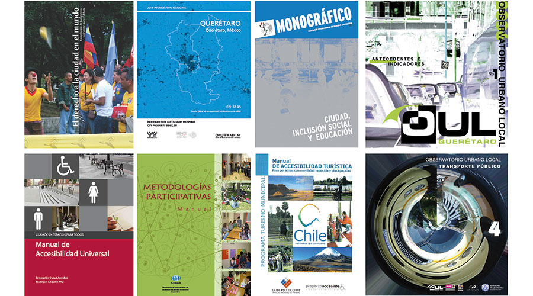

Compendio de estudios y publicaciones digitales

Se presenta la colección digital del IMPLAN en esta sección, publicaciones, estudios y proyectos.
Estudios, proyectos y publicaciones
 Temas Varios
Temas Varios
- CPI-Municipio De Querétaro
- Crecimiento del Área Urbana de la ZMQ 1970-2015
- Una visión alemana de los modelos de ciudad: el caso de Querétaro
- Observatorio Urbano Local 1
- Observatorio Urbano Local 2
- Observatorio Urbano Local 3
- Observatorio Urbano Local 4
- Observatorio Urbano Local 5
- Observatorio Urbano Local 6
- El derecho a la ciudad en el mundo.
- Ciudad educadora, aproximaciones contextuales y conceptuales.
- El derecho a la ciudad.
- Ciudad Educadora, una manera de aprender a vivir juntos.
- Ciudad, inclusión social y educación.
- Educación y vida urbana: Guadalajara, ciudad educadora.
- Pedagogía Urbana: elementos para su delimitación como campo de conocimiento.
- De la sostenibilidad a los ecobarrios.
- Manual de accesibilidad universal: Chile.
- Movilidad y planeamiento sostenible: Madrid.
- Metodologías participativas: Manual.
- La cultura como identidad y la identidad como cultura.
- Participación, democracia y formación para la ciudadanía. Los consejos de infancia.
- Manual de accesibilidad turística para persona con movilidad reducida y discapacidad.
- Querétaro y sus Delegaciones_INEGI
Visualización
Selecciona un estudio, proyecto o publicación en la tabla de "Estudios, proyectos y publicaciones" para desplegar los documentos PDFs.
 Descarga archivo
Descarga archivo